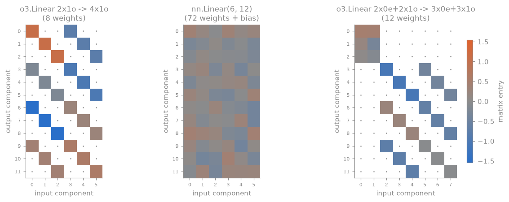
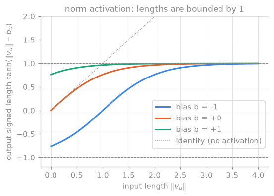
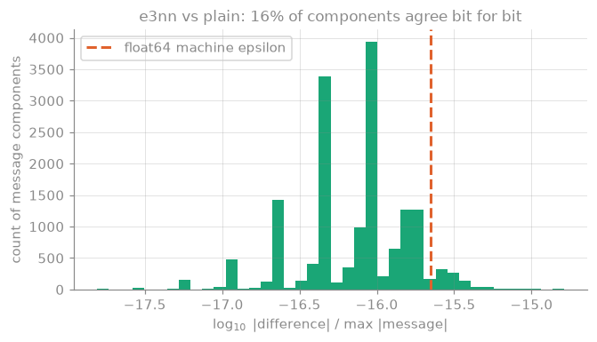
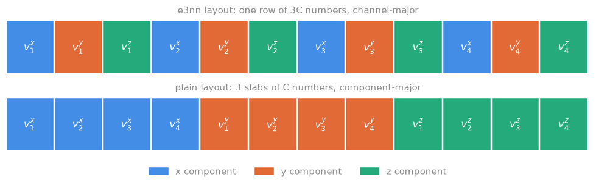
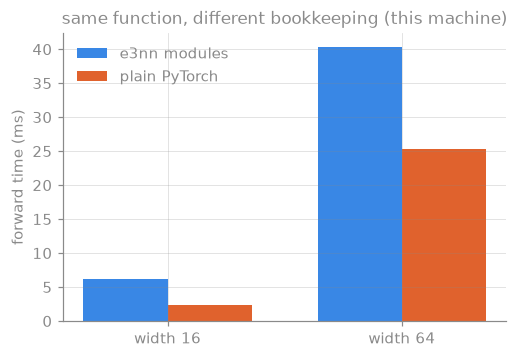

e3nn and plain PyTorch compute the same function#
What you will learn
What
o3.Lineardoes when every feature is a vector (1o): it mixes channels with one weight matrix and never mixes the x, y, z components. We prove it by reading off its dense matrix.How to build A0 from e3nn modules (
o3.Linear,NormActivation,ElementwiseTensorProduct), copy its weights into the plain-PyTorchMiniA0, and show that the two agree to float64 round-off, message by message.Where e3nn’s normalisation constants come from: the path weight \(C_{\rm in}^{-1/2}\) and a pair of \(\sqrt 3\) factors that cancel. You will also see why the plain version stores vectors as
(3, rows, C).When you actually need an e3nn tensor product, and why A0’s vector branch can do without one.
Prerequisites: the A0 message from the course introduction (scalar branch \(y_u\), vector branch \(v_u\), product \(y_u v_u\), linear head, sum over neighbours). Lesson 02b builds the two branches step by step and Lesson 02c proves the span property, but this lesson restates everything it needs and can be read on its own. From the MolSSI e3nn course: 02a, irreps, 03a, tensor products in theory, 03b, tensor products in e3nn and 04, norm activations.
import time
import numpy as np
import matplotlib.pyplot as plt
import torch
from e3nn import o3, nn as enn
from course_utils.models import MiniA0, MiniA0E3nn, copy_parameters
from course_utils.equivariance import check_equivariance, check_invariance, report
from course_utils.plotting import PALETTE, INK, CMAP_DIVERGING
torch.set_default_dtype(torch.float64) # every identity and symmetry check in this lesson is float64
The original research model in this repository (src/u1_e3nn_no_pressure.py) is written with e3nn. A
faster version of the same network can be written in plain PyTorch, and the course’s MiniA0 is such a version.
Before trusting it, we have to know that both compute the same function, and understand why they can.
1. Failure first: an ordinary linear layer on vector components#
A0’s vector branch takes two vectors per neighbour, \(x_{fj}\) and \(e_j\), and maps them to \(C\) new vectors. The
obvious way to write that in PyTorch is to flatten the 6 components and apply torch.nn.Linear(6, 12), a
linear map with 72 weights and a bias. It mixes x into y and has a preferred direction, and the symmetry check
catches it:
torch.manual_seed(0)
dense = torch.nn.Linear(6, 12)
dense_fn = lambda a, b: dense(torch.cat((a, b), -1)).view(*a.shape[:-1], 4, 3).transpose(0, 1)
try:
check_equivariance(dense_fn, (torch.randn(10, 3), torch.randn(10, 3)), ("vector", "vector"),
name="nn.Linear on flattened components")
except AssertionError as err:
print("caught:", err)
FAIL nn.Linear on flattened components: max error 2.0e+00 (tol 1e-12) [5 random g in O(3), det = [-1, 1]]
caught: nn.Linear on flattened components: equivariance error 1.993e+00 >= tol 1.0e-12
What constrains a linear layer so that it does pass this check? That is the next section.
2. o3.Linear on vectors is one weight matrix per irrep type#
Take \(C_{\rm in}\) input vectors \(v_1,\dots,v_{C_{\rm in}}\) (irreps C_in x 1o) and ask for \(C_{\rm out}\) output
vectors. An equivariant linear map must satisfy \(L(g v) = g\,L(v)\) for every \(g\in O(3)\). Schur’s lemma
(see MolSSI 01b) says
the only such maps between copies of the same irrep are multiples of the identity on each copy. So, up to
e3nn’s choice of normalisation constant, the most general equivariant linear layer is
Each output vector is a weighted sum of input vectors, and the same weight multiplies the x, y and z component. The factor \(C_{\rm in}^{-1/2}\) is not part of Schur’s result; it is e3nn’s path normalisation, a convention that keeps the output variance close to the input variance when the weights are standard normal. There is no bias term, because a bias vector would point in one fixed direction.
Let us build the layer A0 uses first (2x1o, i.e. \(x_{fj}\) and \(e_j\), to 4x1o) and compare it with the
formula.
torch.manual_seed(0)
lin = o3.Linear("2x1o", "4x1o")
print(lin)
print("instructions:", lin.instructions)
v = torch.randn(10, 2 * 3) # 10 rows, e3nn layout [v_1 (3), v_2 (3)]
W = lin.weight.detach().view(2, 4) # (C_in, C_out), the same flat vector as in MiniA0
by_hand = torch.einsum("rui,uw->rwi", v.view(10, 2, 3), W) / np.sqrt(2)
with torch.no_grad():
err = (lin(v).view(10, 4, 3) - by_hand).abs().max().item()
print(report("o3.Linear == C_in^-1/2 * sum_u W_uw v_u", err, 1e-12))
assert err < 1e-12
print("path weight", lin.instructions[0].path_weight, "= 1/sqrt(C_in) =", 1 / np.sqrt(2))
Linear(2x1o -> 4x1o | 8 weights)
instructions: [Instruction(i_in=0, i_out=0, path_shape=(2, 4), path_weight=0.7071067811865476)]
PASS o3.Linear == C_in^-1/2 * sum_u W_uw v_u: max error 8.9e-16 (tol 1e-12)
path weight 0.7071067811865476 = 1/sqrt(C_in) = 0.7071067811865475
The printed path weight is \(1/\sqrt 2\) for \(C_{\rm in}=2\). There are \(C_{\rm in} C_{\rm out}=8\) weights, not \(6\times 12 = 72\) as a general linear map on the 6 numbers would have.
2.1 Seeing the block structure#
A linear map is a matrix, and we can read it off by feeding the identity. Here we use a layer with both scalars
and vectors (2x0e+2x1o -> 3x0e+3x1o) so that every kind of block appears.
torch.manual_seed(1)
mixed = o3.Linear("2x0e+2x1o", "3x0e+3x1o")
with torch.no_grad():
D = mixed(torch.eye(mixed.irreps_in.dim)).T.contiguous() # (out dim, in dim) = (12, 8)
w = mixed.weight.detach()
W_s = w[:6].reshape(2, 3) / np.sqrt(2) # scalar path 0e -> 0e
W_v = w[6:].reshape(2, 3) / np.sqrt(2) # vector path 1o -> 1o
checks = {
"scalar block == W_s^T": (D[:3, :2] - W_s.T).abs().max().item(),
"vector block == kron(W_v^T, I_3)": (D[3:, 2:] - torch.kron(W_v.T.contiguous(), torch.eye(3))).abs().max().item(),
"0e <- 1o block is zero": D[:3, 2:].abs().max().item(),
"1o <- 0e block is zero": D[3:, :2].abs().max().item(),
}
for name, e in checks.items():
print(report(name, e, 1e-12))
assert e < 1e-12
PASS scalar block == W_s^T: max error 1.1e-16 (tol 1e-12)
PASS vector block == kron(W_v^T, I_3): max error 2.2e-16 (tol 1e-12)
PASS 0e <- 1o block is zero: max error 0.0e+00 (tol 1e-12)
PASS 1o <- 0e block is zero: max error 0.0e+00 (tol 1e-12)
The vector block is a Kronecker product \(W^\top\otimes I_3\). Every \(3\times 3\) sub-block is a multiple of the
identity, so components are never mixed. That has a useful consequence. e3nn orders the components of an l=1
feature as \((y, z, x)\), but a map that never mixes components does not care about the order. So we can feed
Cartesian \((x, y, z)\) straight into o3.Linear on 1o features and stay equivariant. Here is the numerical check,
reflections included:
check_equivariance(lambda a, b: lin(torch.cat((a, b), -1)).view(*a.shape[:-1], 4, 3).transpose(0, 1),
(torch.randn(10, 3), torch.randn(10, 3)), ("vector", "vector"), name="o3.Linear 2x1o->4x1o");
PASS o3.Linear 2x1o->4x1o: max error 2.8e-16 (tol 1e-12) [5 random g in O(3), det = [-1, 1]]
Here is the o3.Linear matrix next to the nn.Linear one from Section 1 and the mixed layer above:

Cells that are exactly zero are left blank (see-through) and marked with a small dot; every coloured cell, even a gray-looking one, holds a nonzero number. On the left, every \(3\times 3\) tile is a scaled identity: only its diagonal is coloured. In the middle every entry is free and nonzero. On the right, the scalar and vector blocks sit on the diagonal and the off-diagonal blocks are blank, as the checks in Section 2.1 showed.
3. The other two e3nn modules, written out#
A0’s vector branch also uses a norm activation, and the scalar and vector branches meet in an element-wise tensor product. Both turn out to be simple formulas.
3.1 NormActivation: keep the direction, squash the length#
For each channel \(u\) the norm activation computes
The direction is kept, and the new length is \(|\tanh(\cdot)| < 1\). A length is invariant, so this is equivariant for any scalar function of the length (MolSSI 04 gives the general argument).
torch.manual_seed(2)
C = 4
na = enn.NormActivation(o3.Irreps(f"{C}x1o"), torch.tanh, epsilon=1e-6, bias=True)
with torch.no_grad():
na.biases.copy_(torch.randn(C))
def norm_act_by_hand(v, b, eps=1e-6):
"""v (..., C, 3) -> same shape."""
r = torch.sqrt(torch.clamp_min(v.square().sum(-1, keepdim=True), eps * eps))
return torch.tanh(r + b[:, None]) * v / r
vv = 2 * torch.randn(50, C, 3)
vv[0, 0] = 0.0 # include an exactly-zero vector to exercise epsilon
with torch.no_grad():
err = (na(vv.reshape(50, 3 * C)).view(50, C, 3) - norm_act_by_hand(vv, na.biases)).abs().max().item()
print(report("NormActivation == tanh(|v|+b) v/|v|", err, 1e-12))
assert err < 1e-12
check_equivariance(lambda a: na(a.reshape(a.shape[0], -1)).view_as(a), (vv,), ("vector",), name="NormActivation");
PASS NormActivation == tanh(|v|+b) v/|v|: max error 1.1e-16 (tol 1e-12)
PASS NormActivation: max error 5.6e-16 (tol 1e-12) [5 random g in O(3), det = [-1, 1]]

A negative output length means the vector flips direction. That is still equivariant, because the flip depends only on an invariant. Note the other end of the curve too: with a positive bias, an input of nearly zero length still gets an output length of about \(\tanh(b_u)\), in the direction of a vector that is mostly rounding noise. That is the numerical sensitivity Section 4.3 comes back to.
3.2 ElementwiseTensorProduct 0e x 1o: two \(\sqrt3\) factors cancel#
Combining a scalar \(y_u\) with a vector \(v_u\) is a tensor product \(0e\otimes 1o\to 1o\). e3nn builds it from a Clebsch-Gordan coefficient (MolSSI 03a). For this path the coefficient is \(1/\sqrt3\) times the identity, because e3nn normalises the coefficients to unit Frobenius norm. The module then multiplies by a path weight of \(\sqrt{3}\) (component normalisation), so the result is just \(y_u v_u\).
cg = o3.wigner_3j(0, 1, 1)[0] # (3, 3) Clebsch-Gordan block for 0 x 1 -> 1
print("wigner_3j(0, 1, 1):\n", cg.numpy().round(4))
cg_err = (cg - torch.eye(3) / np.sqrt(3)).abs().max().item()
print(report("CG coefficient == I / sqrt(3)", cg_err, 1e-12), "| Frobenius norm:", f"{cg.norm().item():.6f}")
assert cg_err < 1e-12
C = 6
ep = o3.ElementwiseTensorProduct(f"{C}x0e", f"{C}x1o")
print(ep, "| path weight:", ep.instructions[0].path_weight, "= sqrt(3) =", np.sqrt(3))
y, vv = torch.randn(20, C), torch.randn(20, C, 3)
err = (ep(y, vv.reshape(20, 3 * C)).view(20, C, 3) - y[..., None] * vv).abs().max().item()
print(report("ElementwiseTensorProduct(y, v) == y_u * v_u", err, 1e-12))
assert err < 1e-12
wigner_3j(0, 1, 1):
[[0.5774 0. 0. ]
[0. 0.5774 0. ]
[0. 0. 0.5774]]
PASS CG coefficient == I / sqrt(3): max error 1.1e-16 (tol 1e-12) | Frobenius norm: 1.000000
ElementwiseTensorProduct(6x0e x 6x1o -> 6x1o | 6 paths | 0 weights) | path weight: 1.7320508075688772 = sqrt(3) = 1.7320508075688772
PASS ElementwiseTensorProduct(y, v) == y_u * v_u: max error 0.0e+00 (tol 1e-12)
The plain-PyTorch code can therefore write y * v and never mention \(\sqrt 3\).
4. Whole model: e3nn modules versus plain formulas#
MiniA0E3nn is the A0 structure written with the three modules above, as in the repository’s
src/u1_e3nn_no_pressure.py. MiniA0 writes out the formulas. Their parameters have the same names and shapes,
so the weights of one can be copied into the other.
width, depth = 16, 3
torch.manual_seed(3)
m_e3nn = MiniA0E3nn(width, depth).double()
with torch.no_grad(): # make the norm-activation biases nonzero so they are tested too
for n, p in m_e3nn.named_parameters():
if "non_lin.biases" in n:
p.normal_()
m_plain = copy_parameters(m_e3nn, MiniA0(width, depth).double())
print(f"{'parameter':<34}{'shape':>10}")
for n, p in m_plain.named_parameters():
print(f"{n:<34}{str(tuple(p.shape)):>10}")
parameter shape
lyr_list1.0.weight (16, 3)
lyr_list1.0.bias (16,)
lyr_list1.1.weight (16, 16)
lyr_list1.1.bias (16,)
lyr_list1.2.weight (16, 16)
lyr_list1.2.bias (16,)
lyr_list2.0.lin.weight (32,)
lyr_list2.0.non_lin.biases (16,)
lyr_list2.1.lin.weight (256,)
lyr_list2.1.non_lin.biases (16,)
lyr_list2.2.lin.weight (256,)
lyr_list2.2.non_lin.biases (16,)
final_lin_vec.weight (16,)
Real inputs come from a toy snapshot (Part I). We use 400 query points with \(M=16\) neighbours each.
snap = cu.make_snapshot(seed=0)
ds = cu.make_dataset([snap], n_points=400, M=16, frame="exterior", state="base", seed=0, dtype=torch.float64)
args = (ds["scalars"], ds["e_j"], ds["x_fj"])
print({k: tuple(t.shape) for k, t in zip(("scalars", "e_j", "x_fj"), args)})
{'scalars': (400, 16, 3), 'e_j': (400, 16, 3), 'x_fj': (400, 16, 3)}
4.1 Failure first: a component-wise bias#
A natural “improvement” to the plain vector stack is to add a learnable bias to each component, as nn.Linear
would. It runs and has the same shapes, but it breaks equivariance. To make sure the failure comes from the bias and
not from a slip in re-writing the forward pass, we first run the re-written model with the bias set to zero and
check that it reproduces MiniA0 exactly:
def outputs_with_component_bias(s, e, x, comp_bias):
"""MiniA0's forward pass (summed over neighbours) with a per-component bias added after the first linear layer."""
y = m_plain.scalar_branch(s)
B, M = x.shape[:2]
vv = torch.stack((x, e), -1).permute(2, 0, 1, 3).reshape(3, B * M, 2)
for k, lyr in enumerate(m_plain.lyr_list2):
h = torch.matmul(vv, lyr.lin.matrix())
if k == 0:
h = h + comp_bias.T[:, None, :] # the bug: one fixed vector per channel
r = torch.sqrt(torch.clamp_min(h.square().sum(0), lyr.non_lin.eps2))
vv = h * (lyr.non_lin.act(r + lyr.non_lin.biases) / r)
vv = vv.reshape(3, B, M, width).permute(1, 2, 3, 0)
return torch.einsum("bmc,bmci,c->bmi", y, vv, m_plain.final_lin_vec.matrix()[:, 0]).sum(1)
kinds = ("scalar", "vector", "vector")
with torch.no_grad():
ref = m_plain(*args)
err0 = ((outputs_with_component_bias(*args, torch.zeros(width, 3)) - ref).abs().max() / ref.abs().max()).item()
print(report("re-written forward, zero bias == MiniA0 (relative)", err0, 1e-12))
assert err0 < 1e-12
torch.manual_seed(0)
comp_bias = 0.1 * torch.randn(width, 3)
try:
check_equivariance(lambda s, e, x: outputs_with_component_bias(s, e, x, comp_bias), args, kinds,
name="A0 + component-wise vector bias")
except AssertionError as err:
print("caught:", err)
PASS re-written forward, zero bias == MiniA0 (relative): max error 0.0e+00 (tol 1e-12)
FAIL A0 + component-wise vector bias: max error 6.5e-01 (tol 1e-12) [5 random g in O(3), det = [-1, 1]]
caught: A0 + component-wise vector bias: equivariance error 6.470e-01 >= tol 1.0e-12
The bias is a fixed vector per channel. It does not rotate with the inputs, so the outputs of a rotated configuration are no longer the rotated outputs. The zero-bias line above shows that the rest of the re-written code is right, so the bias alone is to blame.
4.2 Success: same weights, same function#
Without the bias, the e3nn model and the plain one should compute the same thing, message by message. They do:
with torch.no_grad():
msg_e3nn, msg_plain = m_e3nn.messages(*args), m_plain.messages(*args)
out_e3nn, out_plain = m_e3nn(*args), m_plain(*args)
scale = msg_e3nn.abs().max().item()
err_msg = ((msg_e3nn - msg_plain).abs().max() / scale).item()
err_out = ((out_e3nn - out_plain).abs().max() / out_e3nn.abs().max()).item()
print(report("messages: e3nn vs plain (relative)", err_msg, 1e-12, f"{msg_e3nn.numel() // 3} messages"))
print(report("outputs: e3nn vs plain (relative)", err_out, 1e-12))
assert err_msg < 1e-12 and err_out < 1e-12
PASS messages: e3nn vs plain (relative): max error 1.6e-15 (tol 1e-12) [6400 messages]
PASS outputs: e3nn vs plain (relative): max error 4.4e-16 (tol 1e-12)
Both are exactly O(3)-equivariant, reflections included:
check_equivariance(m_e3nn, args, kinds, name="MiniA0E3nn")
check_equivariance(m_plain, args, kinds, name="MiniA0 (copied weights)");
PASS MiniA0E3nn: max error 1.4e-15 (tol 1e-12) [5 random g in O(3), det = [-1, 1]]
PASS MiniA0 (copied weights): max error 1.0e-15 (tol 1e-12) [5 random g in O(3), det = [-1, 1]]
The construction order of the two classes is also identical. So building both from the same seed already gives the same weights, with no copying:
torch.manual_seed(7); a = MiniA0E3nn(width, depth).double()
torch.manual_seed(7); b = MiniA0(width, depth).double()
with torch.no_grad():
err = ((a(*args) - b(*args)).abs().max() / a(*args).abs().max()).item()
print(report("same seed, no copy: e3nn vs plain", err, 1e-12))
assert err < 1e-12
PASS same seed, no copy: e3nn vs plain: max error 6.3e-16 (tol 1e-12)

The remaining differences sit at the level of float64 rounding. They come from summing the same numbers in a different order.
4.3 Why the plain version stores vectors as (3, rows, C)#
e3nn stores a C x 1o feature as one row of \(3C\) numbers, channel by channel: \([v_1^{(1)}, v_1^{(2)}, v_1^{(3)},
v_2^{(1)}, \dots]\). MiniA0 instead keeps the three components in separate slabs of shape (rows, C). In that
layout the equivariant linear layer is a single batched matrix product v @ W of shape (3, rows, C_in) x (C_in, C_out). The norm is a sum over the leading axis of length 3, and the channel product is a plain broadcast. There
is no reshaping and no interleaving.

The two layouts hold the same numbers. We check that layer by layer, giving both codes the same input at every layer (the e3nn activations, re-laid out for the plain code), so that each check tests one layer and nothing accumulates:
def to_plain(v): # e3nn (B, M, 3C) channel-major -> plain (3, B*M, C) component-major
return v.view(B, M, -1, 3).permute(3, 0, 1, 2).reshape(3, B * M, -1)
def to_e3nn(v): # plain (3, B*M, C) -> e3nn (B, M, 3C)
return v.reshape(3, B, M, -1).permute(1, 2, 3, 0).reshape(B, M, -1)
with torch.no_grad():
B, M = args[2].shape[:2]
v_e3nn = torch.cat((args[2], args[1]), -1) # "2x1o": [x_fj, e_j]
print(report("input: plain layout round trip", (to_e3nn(to_plain(v_e3nn)) - v_e3nn).abs().max().item(), 1e-12))
for k, (le, lp) in enumerate(zip(m_e3nn.lyr_list2, m_plain.lyr_list2)):
h_e3nn = le.lin(v_e3nn) # e3nn linear
h_plain = torch.matmul(to_plain(v_e3nn), lp.lin.matrix()) # plain linear, same input
out_e3nn, out_plain = le.non_lin(h_e3nn), lp(to_plain(v_e3nn))
e_lin = (h_e3nn - to_e3nn(h_plain)).abs().max().item()
e_out = (out_e3nn - to_e3nn(out_plain)).abs().max().item()
print(report(f"layer {k + 1} linear (3, rows, C) == e3nn", e_lin, 1e-12))
print(report(f"layer {k + 1} + norm activation == e3nn", e_out, 1e-12))
assert e_lin < 1e-12 and e_out < 1e-12
v_e3nn = out_e3nn
print("max output length over all channels:", f"{v_e3nn.view(B, M, width, 3).norm(dim=-1).max():.3f}", "(< 1)")
PASS input: plain layout round trip: max error 0.0e+00 (tol 1e-12)
PASS layer 1 linear (3, rows, C) == e3nn: max error 1.8e-15 (tol 1e-12)
PASS layer 1 + norm activation == e3nn: max error 1.4e-15 (tol 1e-12)
PASS layer 2 linear (3, rows, C) == e3nn: max error 4.4e-16 (tol 1e-12)
PASS layer 2 + norm activation == e3nn: max error 3.0e-15 (tol 1e-12)
PASS layer 3 linear (3, rows, C) == e3nn: max error 4.4e-16 (tol 1e-12)
PASS layer 3 + norm activation == e3nn: max error 2.8e-15 (tol 1e-12)
max output length over all channels: 0.995 (< 1)
Every layer agrees to round-off. One caution if you ever compare the two stacks end to end instead: the activation divides by \(\lVert v\rVert\) to get the direction, so a vector with a very short pre-activation length amplifies rounding by roughly \(1/\lVert v\rVert\). Individual intermediate entries can then differ by more than machine epsilon even though the final messages agree, as in Section 4.2. (This is also why e3nn clamps the length at \(\epsilon\): without the clamp, an exactly zero vector would give \(0/0\).)
4.4 A quick timing on this machine#
The plain version does less bookkeeping, so it is usually faster. The size of the gap depends on hardware, width and batch size, so measure it yourself. The numbers below are printed by this notebook on the build machine and are not research results.
def time_forward(model, args, reps=5, repeats=7):
"""Best of `repeats` timings, each the mean of `reps` calls (the minimum is the least noisy estimate)."""
with torch.no_grad():
model(*args) # one-off warm-up (TorchScript optimisation, memory allocator)
best = float("inf")
for _ in range(repeats):
t0 = time.perf_counter()
for _ in range(reps):
model(*args)
best = min(best, (time.perf_counter() - t0) / reps)
return best
torch.manual_seed(0)
ds32 = cu.make_dataset([snap], n_points=2000, M=16, frame="exterior", state="base", seed=1, dtype=torch.float32)
args32 = (ds32["scalars"], ds32["e_j"], ds32["x_fj"])
old_threads = torch.get_num_threads()
torch.set_num_threads(min(4, old_threads)) # restored at the end of this cell
timings = {}
for w_ in (16, 64):
torch.manual_seed(0)
e_ = MiniA0E3nn(w_, 3).float()
p_ = copy_parameters(e_, MiniA0(w_, 3).float())
timings[w_] = (time_forward(e_, args32), time_forward(p_, args32))
print(f"width {w_:>3}: e3nn {1e3 * timings[w_][0]:7.2f} ms plain {1e3 * timings[w_][1]:7.2f} ms "
f"ratio {timings[w_][0] / timings[w_][1]:.2f} (2000 points x 16 neighbours, float32, CPU)")
torch.set_num_threads(old_threads)
width 16: e3nn 6.12 ms plain 2.41 ms ratio 2.54 (2000 points x 16 neighbours, float32, CPU)
width 64: e3nn 40.36 ms plain 25.25 ms ratio 1.60 (2000 points x 16 neighbours, float32, CPU)

Part VI returns to speed, including profiling and GPU kernels.
5. When do you actually need a tensor product?#
Everything in A0’s vector branch is linear in the vectors, apart from the norm activation, which only rescales
each vector by a function of its own length. This works because every feature is a 1o vector and the output is a
1o vector.
5.1 Failure: a linear layer cannot make an invariant from vectors#
Suppose we want the invariant \(x_{fj}\cdot e_j\) as a feature. o3.Linear cannot produce it. Asking for
2x1o -> 3x0e gives a layer with no weights at all, whose output is always zero:
lin_bad = o3.Linear("2x1o", "3x0e")
print(lin_bad)
with torch.no_grad():
print("output on random input:", lin_bad(torch.randn(2, 6)))
Linear(2x1o -> 3x0e | 0 weights)
output on random input: tensor([[0., 0., 0.],
[0., 0., 0.]])
By Schur’s lemma there is no nonzero equivariant linear map between different irreps. Getting from 1o to 0e
takes a product of two features, which is exactly what a tensor product is.
5.2 The fix: 1o x 1o = 0e + 1e + 2e#
tp = o3.FullTensorProduct("1x1o", "1x1o")
print(tp, "->", tp.irreps_out)
a, b = torch.randn(30, 3), torch.randn(30, 3)
out = tp(a, b)
dot_err = (out[:, 0] - (a * b).sum(-1) / np.sqrt(3)).abs().max().item()
cross_err = (out[:, 1:4] - torch.linalg.cross(a, b) / np.sqrt(2)).abs().max().item()
print(report("0e part == a.b / sqrt(3)", dot_err, 1e-12))
print(report("1e part == (a x b) / sqrt(2)", cross_err, 1e-12))
assert dot_err < 1e-12 and cross_err < 1e-12
FullTensorProduct(1x1o x 1x1o -> 1x0e+1x1e+1x2e | 3 paths | 0 weights) -> 1x0e+1x1e+1x2e
PASS 0e part == a.b / sqrt(3): max error 2.2e-16 (tol 1e-12)
PASS 1e part == (a x b) / sqrt(2): max error 8.9e-16 (tol 1e-12)
We fed Cartesian \((x, y, z)\) components, while e3nn reads an l=1 feature as \((y, z, x)\). That relabelling is a
cyclic permutation, which is a proper rotation, and dot and cross products commute with proper rotations, so the
identities above hold in Cartesian order too. The 0e part is the dot product, an invariant. The 1e part is the cross product, a pseudovector: it flips sign
under a reflection relative to an ordinary vector. (The 2e part lives in e3nn’s own basis ordering, so we check
only its length, which must be invariant.)
check_invariance(lambda a, b: tp(a, b)[:, :1], (a, b), ("vector", "vector"), name="TP 0e part (dot)")
check_equivariance(lambda a, b: tp(a, b)[:, 1:4], (a, b), ("vector", "vector"), out_kind="pseudovector",
name="TP 1e part as pseudovector")
check_invariance(lambda a, b: tp(a, b)[:, 4:].norm(dim=-1, keepdim=True), (a, b), ("vector", "vector"),
name="TP |2e part|")
try:
check_equivariance(lambda a, b: tp(a, b)[:, 1:4], (a, b), ("vector", "vector"), out_kind="vector",
name="TP 1e part as polar vector")
except AssertionError as err:
print("caught:", err)
PASS TP 0e part (dot): max error 4.0e-16 (tol 1e-12) [5 random g in O(3), det = [-1, 1]]
PASS TP 1e part as pseudovector: max error 5.9e-16 (tol 1e-12) [5 random g in O(3), det = [-1, 1]]
PASS TP |2e part|: max error 3.5e-16 (tol 1e-12) [5 random g in O(3), det = [-1, 1]]
FAIL TP 1e part as polar vector: max error 2.1e+00 (tol 1e-12) [5 random g in O(3), det = [-1, 1]]
caught: TP 1e part as polar vector: equivariance error 2.069e+00 >= tol 1.0e-12
5.3 Why A0 does without one#
With only two input vectors, \(x_{fj}\) and \(e_j\), a tensor product adds no new output directions. Any O(3)-equivariant polar vector built from them lies in \(\mathrm{span}(x_{fj}, e_j)\) (Lesson 02c proves this in full). The quick argument: the reflection through the plane of \(x_{fj}\) and \(e_j\) leaves both inputs unchanged, so it must also leave a polar output unchanged, and only vectors in that plane are unchanged by it. The cross product \(x_{fj}\times e_j\) is normal to the plane, which is allowed only because it is a pseudovector. What a tensor product would add is the invariant \(x_{fj}\cdot e_j\) as an explicit input to the coefficients. A0 already sees it implicitly. The first norm activation looks at the length of the first linear layer’s output,
where the tilde absorbs the path weight \(C_{\rm in}^{-1/2} = 1/\sqrt2\), and the last term uses \(\lVert e_j\rVert = 1\) (\(e_j = q_j/\lVert q_j\rVert\) is a unit vector in the toy data). This formula is for the first layer only; deeper layers see lengths of combinations of earlier outputs, which are nonlinear functions of the same invariants. So the angle between \(x_{fj}\) and \(e_j\) enters every channel’s length. Exercise 2 checks this numerically.
The directions are therefore complete, but that does not make A0’s coefficients general functions. Writing the vector branch’s output as \(v_u = a_u\,x_{fj} + b_u\,e_j\), with \(a_u, b_u\) functions of the geometry invariants only, one message is
with \(w_u\) the head weights. The scalar branch \(y_u\) never sees the geometry, and the geometry invariants (\(\lVert x_{fj}\rVert\), \(x_{fj}\cdot e_j\)) reach the coefficients only through the norm-activation lengths. Each coefficient is a sum of \(C\) products of a state-only function and a geometry-only function. Adding a tensor product to the vector branch would not change that structure, and it would not touch A0’s real limit either: the output is a plain sum of independent per-pair messages, so no message can depend on a third particle. Part V is about that limit.
You do need tensor products when:
features have \(l\ge 2\). NequIP, MACE and similar models embed directions with spherical harmonics up to some \(l_{\max}\) and must couple them (MolSSI 02b and 03b).
the output is not a polar vector, for example a vorticity or torque (
1e) or a stress tensor (0e + 2e).many vector features must interact multiplicatively, for example messages that couple neighbour \(j\)’s geometry with neighbour \(k\)’s. That is a higher body order, as in MACE (MolSSI 10b). Part V takes a different route to neighbour-neighbour interaction: attention on invariants.
For A0, then, e3nn is a clear and safe way to write the network, and plain PyTorch is a faster way to run it. The checks in this lesson show the two compute the same function.
Summary#
On features made only of
1ovectors,o3.Linearis \(C_{\rm in}^{-1/2}\,W\) applied channel-wise, \(W^\top\otimes I_3\) as a matrix. It never mixes components and has no bias, so e3nn’s \((y,z,x)\) ordering does not matter there.NormActivationis \(\tanh(\lVert v\rVert+b)\,v/\lVert v\rVert\), andElementwiseTensorProduct\(0e\times 1o\) is \(y_u v_u\), because its \(\sqrt3\) path weight cancels the \(1/\sqrt3\) Clebsch-Gordan coefficient.MiniA0E3nnandMiniA0share parameter names, shapes and construction order. With the same weights they agree to float64 round-off, message by message, and both pass the O(3) check with reflections.The plain version stores vectors as
(3, rows, C), so each layer is one matrix product. That layout holds the same numbers as e3nn’s interleaved one.A linear layer cannot turn vectors into invariants or pseudovectors, which takes a tensor product. A0 does not need one for its output directions, which already span every allowed direction, and the norm activation sees \(x\cdot e\). Its coefficients are still restricted: sums of \(C\) (state-only) x (geometry-only) products, and the model as a whole is a sum of independent pairs (Part V).
Exercises#
Write a plain-PyTorch version of
o3.Linear("2x0e+2x1o", "3x0e+3x1o")from its flatweightvector and check it against the e3nn module in float64. (Hint: the weight vector holds one block per instruction, in order.)Show numerically that a single vector-branch channel of A0 depends on the angle between \(x_{fj}\) and \(e_j\), even though no dot product is ever computed. Keep \(\lVert x_{fj}\rVert\) fixed, rotate \(e_j\) from parallel to antiparallel, and plot the channel’s output length.
Replace A0’s head by a tensor product so that the model predicts a pseudovector (for example a particle rotation rate). Use
o3.FullyConnectedTensorProduct(f"{C}x1o", f"{C}x1o", "1x1e")on two copies of the vector features. Check that the result passesout_kind="pseudovector"and failsout_kind="vector". Could a plaino3.Linear(f"{C}x1o", "1x1e")do the same job?
Solution 1
def mixed_linear_by_hand(x, weight, c_in=(2, 2), c_out=(3, 3)):
s, v = x[:, :c_in[0]], x[:, c_in[0]:].view(-1, c_in[1], 3)
n0 = c_in[0] * c_out[0]
W_s = weight[:n0].view(c_in[0], c_out[0]) / np.sqrt(c_in[0])
W_v = weight[n0:].view(c_in[1], c_out[1]) / np.sqrt(c_in[1])
return torch.cat((s @ W_s, torch.einsum("rui,uw->rwi", v, W_v).reshape(len(x), -1)), -1)
x = torch.randn(10, 8)
with torch.no_grad():
err = (mixed(x) - mixed_linear_by_hand(x, mixed.weight)).abs().max().item()
print(report("plain mixed linear == o3.Linear", err, 1e-12))
Each irrep type gets its own weight matrix and its own \(C_{\rm in}^{-1/2}\). Scalars never feed vectors, and vectors never feed scalars. These are the blank blocks in the figure of Section 2.1.
Solution 2
layer = m_plain.lyr_list2[0] # first vector layer, input (x_fj, e_j)
theta = torch.linspace(0, np.pi, 181)
x = torch.tensor([1.5, 0.0, 0.0]).expand(len(theta), 3)
e = torch.stack((torch.cos(theta), torch.sin(theta), torch.zeros_like(theta)), -1)
v_in = torch.stack((x, e), -1).permute(1, 0, 2) # (3, rows, 2)
with torch.no_grad():
lengths = layer(v_in).norm(dim=0) # (rows, C)
fig, ax = plt.subplots()
for c in range(4):
ax.plot(np.degrees(theta), lengths[:, c], label=f"channel {c}")
ax.set_xlabel("angle between x_fj and e_j (degrees)"), ax.set_ylabel("output length"), ax.legend()
The lengths change with the angle, because \(\lVert W_1 x + W_2 e\rVert^2\) contains \(2W_1W_2\,x\cdot e\). Because the
length enters through \(\tanh\), later layers see a nonlinear function of \(x\cdot e\), which is what a tensor product’s
0e output would have supplied.
Solution 3
C = 8
torch.manual_seed(0)
vec = MiniA0(C, 2).double()
head = o3.FullyConnectedTensorProduct(f"{C}x1o", f"{C}x1o", "1x1e").double()
def pseudo_head(s, e, x):
y = vec.scalar_branch(s)[..., None] # (B, M, C, 1)
v = (y * vec.vector_branch(e, x)).reshape(*x.shape[:2], 3 * C)
return head(v, v).sum(1) # 1o x 1o -> 1e, summed over neighbours
check_equivariance(pseudo_head, args, kinds, out_kind="pseudovector", name="pseudovector head")
try:
check_equivariance(pseudo_head, args, kinds, out_kind="vector", name="pseudovector head as vector")
except AssertionError as err:
print("caught:", err)
print(o3.Linear(f"{C}x1o", "1x1e")) # 0 weights: no linear path from 1o to 1e
The tensor product builds cross products \(v_u\times v_w\) of pairs of channels, which are pseudovectors. Since every
\(v_u\) lies in \(\mathrm{span}(x_{fj}, e_j)\) (Section 5.3), each of those cross products, and so each neighbour’s
pseudovector, is parallel to \(x_{fj}\times e_j\). A linear
layer has no path from 1o to 1e (0 weights), so it cannot. Feeding Cartesian components is safe for the reason
given in Section 5.2.
References#
MolSSI e3nn course: 02a, irreps, 03a, tensor products in theory, 03b, tensor products in e3nn, 04, nonlinearities and gates.
M. Geiger and T. Smidt, e3nn: Euclidean Neural Networks, arXiv:2207.09453 (2022) [Geiger and Smidt, 2022].
e3nn documentation: overview,
o3.TensorProduct,nn.NormActivation.The repository’s e3nn model:
src/u1_e3nn_no_pressure.py.